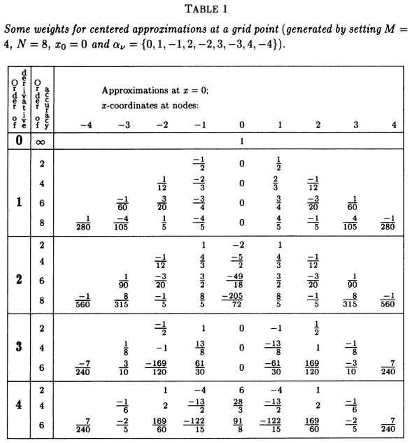
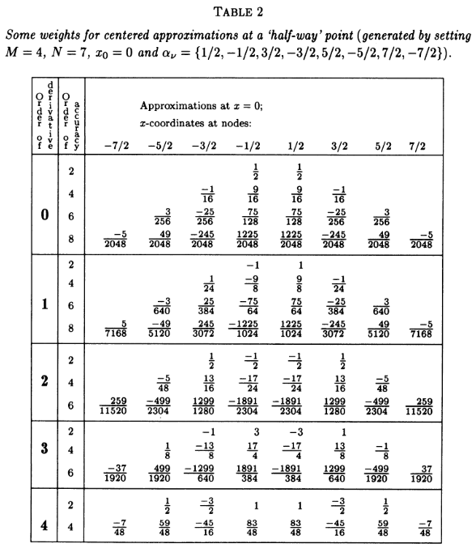
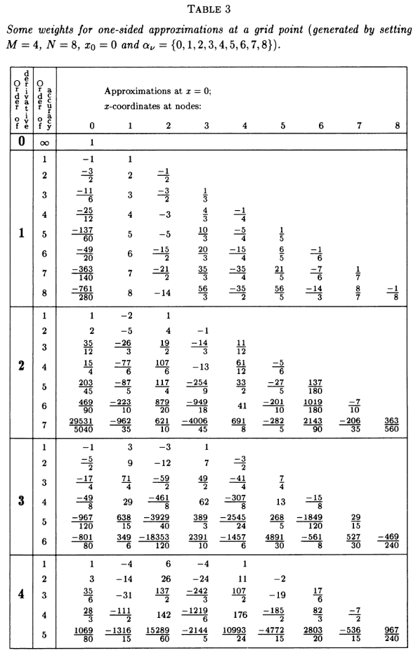
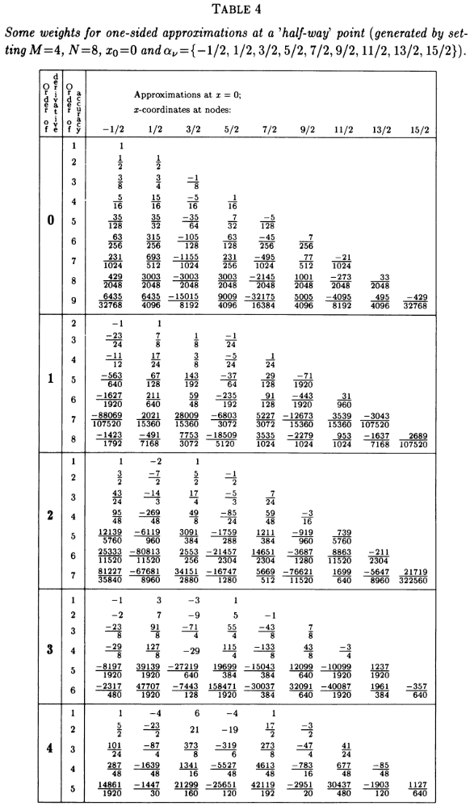

여러개의 점을 사용하는 유한 차분 유도
Derivation of Finite Difference using n-stencil points
정리
$N$번 미분가능한 함수 $f : \mathbb{R} \to \mathbb{R}$ 가 주어져 있다고 하자. 한 점 $t \in \mathbb{R}$ 에서 $d < N$ 인 $d$계 도함수의 함숫값 $f^{(d)} \left( t \right)$ 은 충분히 작은 $h > 0$ 에 대해 기수가 $n \in \mathbb{N}$ 인 유한집합 $S \subset \mathbb{Z}$ 과 같은 수의 점 $\left\{ t + k h : k \in S \right\}$ 으로 다음과 같이 근사할 수 있다. $$ f^{(d)} \left( t \right) \approx \sum_{k \in S} c_{k} f \left( t + kh \right) $$ 여기서 $\left\{ c_{k_{1}} , \cdots , c_{k_{n}} \right\}$ 은 다음과 같이 구해진다. $$ \begin{bmatrix} c_{k_{1}} \\ \vdots \\ c_{k_{n}} \end{bmatrix} = \begin{bmatrix} k_{1}^{0} & \cdots & k_{n}^{0} \\ \vdots & \ddots & \vdots \\ k_{1}^{N-1} & \cdots & k_{n}^{N-1} \end{bmatrix}^{-1} {{ d! } \over { h^{d} }} \begin{bmatrix} \delta_{0,d} \\ \vdots \\ \delta_{N-1,d} \end{bmatrix} $$ 여기서 $n$ 개의 점 $\left\{ t + k h : k \in S \right\}$ 을 스텐실 포인츠Stencil Points라 부르기도 한다.
- $X^{-1}$ 는 역행렬이다.
- $x!$ 는 팩토리얼이다.
- $\delta_{ij} = \begin{cases} 1 & , \text{if } i = j \\ 0 & , \text{if } i \ne j \end{cases}$ 는 크로네커 델타다.
설명
$$ f ' (t) \approx {{ f(t+h) - f(t) } \over { h }} $$ 이산화된 데이터만 있고 실제 함수가 없거나, 있더라도 미분하기 곤란할 때는 위와 같이 평균변화율을 참고할 수 밖에 없다. 그런데 꼭 붙어있는 두 점의 정보를 사용할 게 아니라 다음처럼 좌우 두 점을 쓸 수도 있다. $$ f ' (t) \approx {{ f(t+h) - f(t-h) } \over { 2h }} $$ 보편적으로 더 많은 점을 사용하면 정확도가 더 올라가며, 데이터가 안 좋을수록 이러한 계산에 기대야 하는 상황이 생길 수 있다.
증명 1
전략: 원본 문서처럼 그냥 예제 비슷하게 약식으로만 보인다. 테일러 정리를 통해 연립 방정식을 세우면 끝이다.
예를 들어 $f^{(4)} (t)$ 를 계산하기 위해 $S = \left\{ -2, -1, 0, 1, 2 \right\}$ 과 같이 다섯 개의 점을 쓴다고 생각해보면, 우리의 목표는 다음을 잘 근사하는 $\left\{ c_{-2} , \cdots , c_{2} \right\}$ 을 찾는 것이다. $$ f^{(4)} (t) \approx c_{-2} f (t - 2h) + c_{-1} f (t - 1h) + c_{0} f (t) + c_{1} f (t + h) + c_{k_{2}} f (t + 2h) $$ 여기서 $f (t + kh)$ 각각은 테일러 정리에 따라 다음과 같이 전개된다. $$ \begin{align*} & f^{(4)} (t) \\ =& c_{-2} \left[ f(t) + f ' (t) (-2h) + {{ f '' (t) } \over { 2 }} (-2h)^{2} + {{ f^{(3)} (t) } \over { 6 }} (-2h)^{3} + {{ f^{(4)} (t) } \over { 24 }} (-2h)^{4} \right] \\ & + c_{-1} \left[ f(t) + f ' (t) (-h) + {{ f '' (t) } \over { 2 }} (-h)^{2} + {{ f^{(3)} (t) } \over { 6 }} (-h)^{3} + {{ f^{(4)} (t) } \over { 24 }} (-h)^{4} \right] \\ & + c_{0} f (t) \\ & + c_{1} \left[ f(t) + f ' (t) h + {{ f '' (t) } \over { 2 }} h^{2} + {{ f^{(3)} (t) } \over { 6 }} h^{3} + {{ f^{(4)} (t) } \over { 24 }} h^{4} \right] \\ & + c_{2} \left[ f(t) + f ' (t) (2h) + {{ f '' (t) } \over { 2 }} (2h)^{2} + {{ f^{(3)} (t) } \over { 6 }} (2h)^{3} + {{ f^{(4)} (t) } \over { 24 }} (2h)^{4} \right] \\ & + O \left( h^{5} \right) \\ =& \left[ c_{-2} + c_{-1} + c_{0} + c_{1} + c_{2} \right] f(t) \\ & + \left[ -2 c_{-2} - c_{-1} + 0 c_{0} + c_{1} + 2 c_{2} \right] h f ' (t) \\ & + \left[ 4 c_{-2} + c_{-1} + 0 c_{0} + c_{1} + 4 c_{2} \right] {{ h^{2} } \over { 2 }} f '' (t) \\ & + \left[ -8 c_{-2} - c_{-1} + 0 c_{0} + c_{1} + 8 c_{2} \right] {{ h^{3} } \over { 6 }} f^{(3)} (t) \\ & + \left[ 16 c_{-2} + c_{-1} + 0 c_{0} + c_{1} + 16 c_{2} \right] {{ h^{4} } \over { 24 }} f^{(4)} (t) \\ & + O \left( h^{5} \right) \end{align*} $$ 늘 하던대로 $O \left( h^{5} \right)$ 는 충분히 작으니 탈락시키고, $f(t)$, $f’(t)$, $f^{''} (t)$, $f^{(3)} (t)$, $f^{(4)} (t)$ 가 무엇이든 위 근사식이 성립하려면 $$ \begin{align*} \left[ c_{-2} + c_{-1} + c_{0} + c_{1} + c_{2} \right] =& 0 \\ \left[ -2 c_{-2} - c_{-1} + 0 c_{0} + c_{1} + 2 c_{2} \right] =& 0 \\ \left[ 4 c_{-2} + c_{-1} + 0 c_{0} + c_{1} + 4 c_{2} \right] =& 0 \\ \left[ -8 c_{-2} - c_{-1} + 0 c_{0} + c_{1} + 8 c_{2} \right] =& 0 \\ \left[ 16 c_{-2} + c_{-1} + 0 c_{0} + c_{1} + 16 c_{2} \right] h^{4} f^{(4)} (t) =& 24 f^{(4)} (t) \end{align*} $$ 을 만족하면 된다. 간단히 행렬식의 모양으로 바꿔보면 $$ \begin{align*} & \begin{bmatrix} 1 & 1 & 1 & 1 & 1 \\ -2 & -1 & 0 & 1 & 2 \\ 4 & 1 & 0 & 1 & 4 \\ -8 & -1 & 0 & 1 & 8 \\ 16 & 1 & 0 & 1 & 16 \end{bmatrix} \begin{bmatrix} c_{-2} \\ c_{-1} \\ c_{0} \\ c_{1} \\ c_{2} \end{bmatrix} \\ =& \begin{bmatrix} (-2)^{0} & (-1)^{0} & (0)^{0} & (1)^{0} & (2)^{0} \\ (-2)^{1} & (-1)^{1} & (0)^{1} & (1)^{1} & (2)^{1} \\ (-2)^{2} & (-1)^{2} & (0)^{2} & (1)^{2} & (2)^{2} \\ (-2)^{3} & (-1)^{3} & (0)^{3} & (1)^{3} & (2)^{3} \\ (-2)^{4} & (-1)^{4} & (0)^{4} & (1)^{4} & (2)^{4} \end{bmatrix} \begin{bmatrix} c_{-2} \\ c_{-1} \\ c_{0} \\ c_{1} \\ c_{2} \end{bmatrix} = {{ 1 } \over { h^{4} }} \begin{bmatrix} 0 \\ 0 \\ 0 \\ 0 \\ 4! \end{bmatrix} \end{align*} $$ 마지막 줄에서 좌변은 우리가 정리에서 보았던 그대로의 형태고, 우변에서는 우리가 관심 있는 $d$번째 행을 제외하곤 모조리 $0$ 이 되어 버린 것을 확인할 수 있다. 좌변의 행렬을 우변으로 넘기면 우리가 원하던 근사식을 얻는다.
■
가령 $\left\{ -3, -1, 0, 1 \right\}$ 4개의 점을 사용하는 정확도의 2계 도함수를 근사하고 싶다면 다음의 행렬방정식 $$ \begin{align*} & \begin{bmatrix} (-3)^{0} & (-1)^{0} & (0)^{0} & (1)^{0} \\ (-3)^{1} & (-1)^{1} & (0)^{1} & (1)^{1} \\ (-3)^{2} & (-1)^{2} & (0)^{2} & (1)^{2} \\ (-3)^{3} & (-1)^{3} & (0)^{3} & (1)^{3} \\ (-3)^{4} & (-1)^{4} & (0)^{4} & (1)^{4} \end{bmatrix} \begin{bmatrix} c_{-3} \\ c_{-1} \\ c_{0} \\ c_{1} \end{bmatrix} \\ =& \begin{bmatrix} 1 & 1 & 1 & 1 \\ -3 & -1 & 0 & 1 \\ 9 & 1 & 0 & 1 \\ -27 & -1 & 0 & 1 \\ 81 & 1 & 0 & 1 \end{bmatrix} \begin{bmatrix} c_{-3} \\ c_{-1} \\ c_{0} \\ c_{1} \end{bmatrix} = {{ 1 } \over { h^{2} }} \begin{bmatrix} 0 \\ 0 \\ 2! \\ 0 \end{bmatrix} \end{align*} $$ 을 풀어서 다음을 얻는 식으로 사용하면 된다. 직접 계산은 많이 힘들테고 컴퓨터의 힘을 빌리도록 하자. $$ \begin{align*} f '' (t) \approx & \left[ c_{-3} f (t - 3h) + c_{-1} f (t - h) + c_{0} f(t) + c_{1} f (t + h) \right] \\ =& {{ 1 } \over { h^{2} }} \left[ 0 f (t - 3h) + f (t - h) - 2 f(t) + f (t + h) \right] \end{align*} $$
정확도
역시 엄밀하게 보이지는 않았으나 그 정확도는 $O \left( h^{n - d} \right)$ 로, 스텐실 포인츠를 많이 사용할수록 정확하며 미분을 많이 할수록 코스트가 커진다고 한다.
테이블 2




같이보기
-
Fornberg. (1988). Generation of Finite Difference Formulas on Arbitrarily Spaced Grids: Ch4. ↩︎